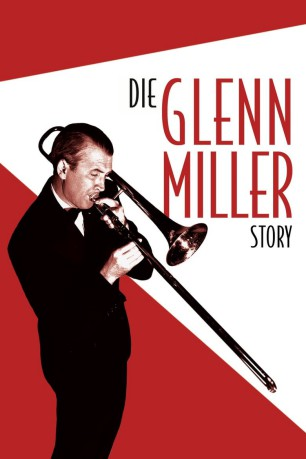
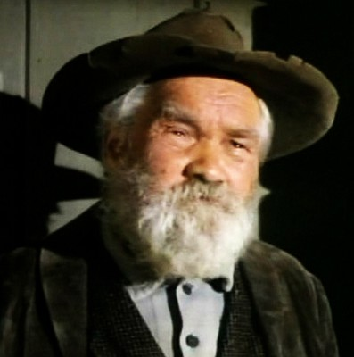

#8742 Die Glenn Miller Story
Alternativ: The Glenn Miller Story
Auszeichnungen: 1 Oscars gewonnen für 2 Oscars nominiert
 
 IMDB-Wertung: 7.3 / 10
IMDB-Wertung: 7.3 / 10  Metascore: 0
Metascore: 0 
Der junge Musiker Glenn Miller liebt die Posaune und hat ein unbändiges Verlangen zu komponieren. An der Universität von Colorado lernt er Helen Burger kennen, verliebt sich in sie. In der Hochzeitsnacht findet ihn Helen bei einer Hot-Jazz-Session in Harlem mit Gene Krupa und anderen Musikern. Bald gründet er seine eigene Swing-Big-Band und wird berühmt. Als der Krieg ausbricht, muss Miller zur Armee und verbringt die meiste Zeit bei der Truppenbetreuung. Im Dezember 1944 verschwindet sein Flugzeug spurlos über dem Englischen Kanal.
Jahr: 1954
Dauer: 112 Minuten
FSK: 6
Land: USA Studio: Universal InternationalTonspuren:
Untertitel: Deutsch,
Auflösung: 1080p (1472x1080) Größe: 7833 MB
Genre: Drama, Musik, Liebe, Biographie, Musical
Regisseur: Anthony Mann
Drehbuch: Valentine Davies
Soundtrack: Henry Mancini
Darsteller:
 James Stewart als Glenn Miller
James Stewart als Glenn Miller- June Allyson als Helen Burger
 Harry Morgan als Chummy
Harry Morgan als Chummy Charles Drake als Don Haynes
Charles Drake als Don Haynes George Tobias als Si Schribman
George Tobias als Si Schribman Barton MacLane als General Arnold
Barton MacLane als General Arnold Sig Ruman als Kranz
Sig Ruman als Kranz Irving Bacon als Mr. Miller
Irving Bacon als Mr. Miller- James Bell als Mr. Burger
- Kathleen Lockhart als Mrs. Miller
- Katherine Warren als Mrs. Burger
- Frances Langford als Frances Langford
- Louis Armstrong als Louis Armstrong
- Ben Pollack als Ben Pollack
- Gene Krupa als Gene Krupa
- James Young als James Young
- Marty Napoleon als Marty Napoleon
- Arvell Shaw als Arvell Shaw
- Cozy Cole als Cozy Cole
-  William Challee als Dispatch Desk Sergeant (uncredited)
- Kevin Corcoran als Steve Miller - Age 4 (uncredited)
- Lisa Gaye als Bobbysoxer (uncredited)
- Lionel Hampton als Band Member (uncredited)
- Ruth Hampton als Young Singer (uncredited)
 Harry Harvey als Doctor (uncredited)
Harry Harvey als Doctor (uncredited)- Damian O'Flynn als Col. Baker (uncredited)
 Steve Pendleton als Lt. Col. Bassell (uncredited)
Steve Pendleton als Lt. Col. Bassell (uncredited)- Davis Roberts als Black Man (uncredited)
 Marion Ross als Polly Haynes (uncredited)
Marion Ross als Polly Haynes (uncredited)- Frank Sutton als Singing Group Member (uncredited)
 Carleton Young als Adjutant General (uncredited)
Carleton Young als Adjutant General (uncredited)- The Modernaires als The Modernaires
- The Archie Savage Dancers als The Archie Savage Dancers
- Barney Bigard als Barney Bigard
- Babe Russin als Babe Russin
- Hal K. Dawson als Used Car Salesman (uncredited)
- Bonnie Eddy als Irene Miller (uncredited)
- Phil Garris als Joe Becker (uncredited)
- Bob Hamlin als Member of The Mellomen (uncredited)
- Rolan Jones als Waiter (uncredited)
- Paula Kelly als Singer (uncredited)
- Bill Lee als Member of The Mellomen (uncredited)
- Dayton Lummis als Col. Spaulding, USAAF (uncredited)
- Leo Mostovoy als Dr. Schillinger (uncredited)
- Thurl Ravenscroft als The Mellomen (uncredited)
- Dick Ryan als Auto Garage Repairman (uncredited)
- Max Smith als Member of The Mellomen (uncredited)
- Anthony Sydes als Herbert Miller (uncredited)
- Deborah Sydes als Joanee Dee Miller (uncredited)
- Paul Tanner als Trombonist in Glenn Miller Band (uncredited)
Datei: X:\1950-1959\Glenn Miller Story, Die (1954, FSK6, 1472x1080).mkv seit 26.04.2018
Festplatte: HD 1900-1970
 Es gibt insgesamt 141 Filme in der Gruppe '1950-1959'
Es gibt insgesamt 141 Filme in der Gruppe '1950-1959'